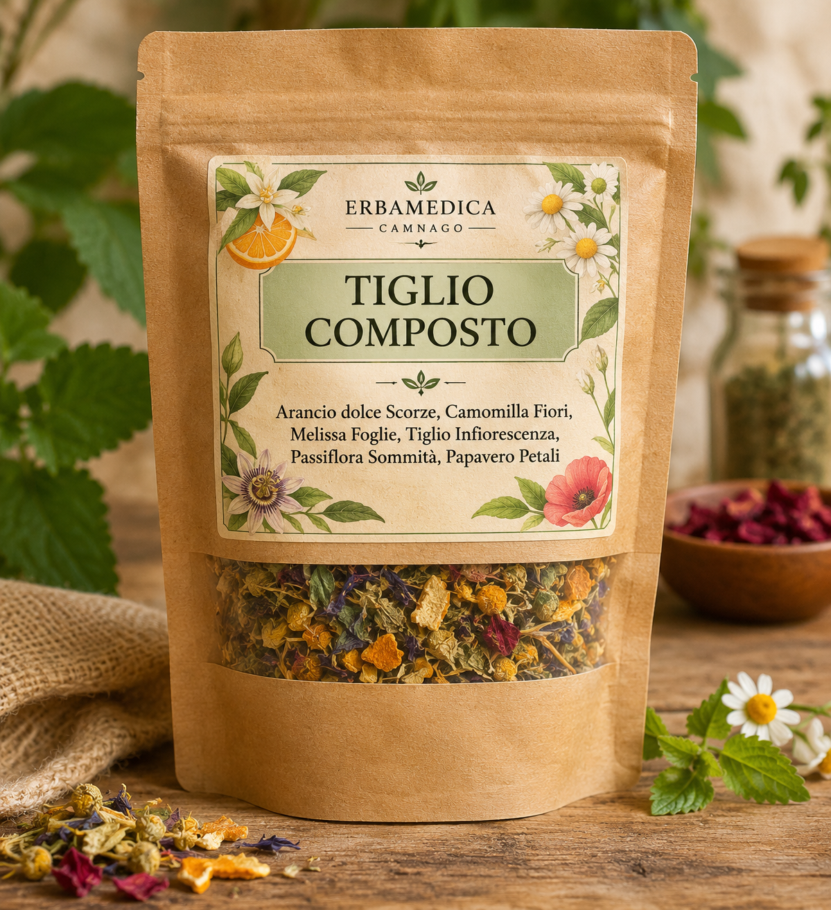

La nostra selezione
Le erbe, una per una.
Scopri le erbe sfuse disponibili presso Erbamedica Camnago, con prezzi chiari per ogni etto (100 grammi).
Per informazioni sulle modalità di preparazione e sulla scelta delle erbe, chiedi consiglio direttamente in erboristeria.
Immagine illustrativa realizzata per Erbamedica Camnago.
Preparata in erboristeria
La tisana personalizzata
10,00 € / 100 gTisana miscelata dalla dottoressa con erbe selezionate, in base alle esigenze individuali e alle indicazioni fornite in erboristeria.

Esempio illustrativo di tisana preparata in erboristeria: Tiglio Composto.
Il listino
Erbe sfuse e prezzi
Tutti i prezzi sono riferiti a 100 g (un etto).
| Erba | Prezzo per 100 g |
|---|---|
| Anice stellato | 10,00 € |
| Anice verde | 8,00 € |
| Arancio dolce – scorze | 8,00 € |
| Betulla bianca | 8,00 € |
| Biancospino | 8,00 € |
| Camomilla matricaria | 10,00 € |
| Equiseto | 8,00 € |
| Finocchio selvatico | 7,00 € |
| Frangula – corteccia | 8,00 € |
| Fucus vesiculosus | 8,00 € |
| Galega | 8,00 € |
| Gramigna | 8,00 € |
| Incenso | 10,00 € |
| Karkadè | 8,00 € |
| Liquirizia naturale decorticata | 8,00 € |
| Malva | 10,00 € |
| Manna | 12,00 € |
| Melissa | 9,00 € |
| Menta piperita | 9,00 € |
| Mirra | 10,00 € |
| Ortica | 9,00 € |
| Rosa canina | 9,00 € |
| Rooibos | 8,00 € |
| Senna – foglie | 8,00 € |
| Tarassaco | 8,00 € |
| Tè verde | 9,00 € |
| Tiglio | 9,00 € |
| Uva ursina | 8,00 € |
| Tè Nilo | 8,00 € |
Disponibilità e prezzi da confermare al momento dell'acquisto. Le erbe non sono tutte adatte a ogni persona: chiedi consiglio in erboristeria prima dell'utilizzo, soprattutto in gravidanza, durante l'allattamento o se assumi farmaci. Alcune piante possono richiedere preparazioni o precauzioni particolari.
Chiedi informazioni su WhatsAppTi aspettiamo in erboristeria
Erbamedica Camnago · Piazza Fratelli Cervi 2
Camnago – Lentate sul Seveso
Tel. 0362 542566